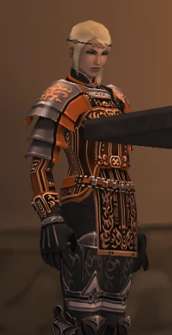

Before you begin
- Complete CoP 7-1: Chains and Bonds.
Starting point
Dilapidated Gate · Misareaux Coast · F-7
People in this mission


Walkthrough
- Examine the Dilapidated Gate at Misareaux Coast (F-7), near the Riverne entrance.
- Speak to Sueleen in Sealion's Den (H-6).
- Approach the palace in Ru'Lude Gardens (H-8).
- Examine the Marble Bridge Eatery door in Upper Jeuno (F-7).
Completion and reward
Title: Esha'ntarl's Comrade in Arms; next mission.
Area maps
Open a zone below, then select a map to enlarge it. Match the named floors and grid coordinates in the steps; these are reference area maps, not a live position tracker.
Misareaux Coast


Sealion's Den


Ru'Lude Gardens


Upper Jeuno


Zone guides
References
Steps are an original summary of the linked walkthrough and reviewed source. Other servers’ bonus rewards are not included. How to read requirements, waits and battlefield notes.
Additional level-75 reference
|
Walkthrough
- Head to Misareaux Coast and check the Dilapidated Gate at F-7 for a cutscene.
- Head to Sealion's Den and talk to Sueleen at H-6 for a cutscene.
- Head to Ru'Lude Gardens and approach the Palace at H-8 for a cutscene.
- Head to Upper Jeuno and check the Marble Bridge Door at F-7 for a cutscene.
Game Description
- Mission Orders
- Tenzen is nowhere to be found. You must locate him before returning to Jeuno to meet with Esha'ntarl.
Adapted from Eden Wiki: Flames in the Darkness · Contributors and history · CC BY-SA 4.0. Revision 22392. Layout, links and optional background text adapted for Zenith.